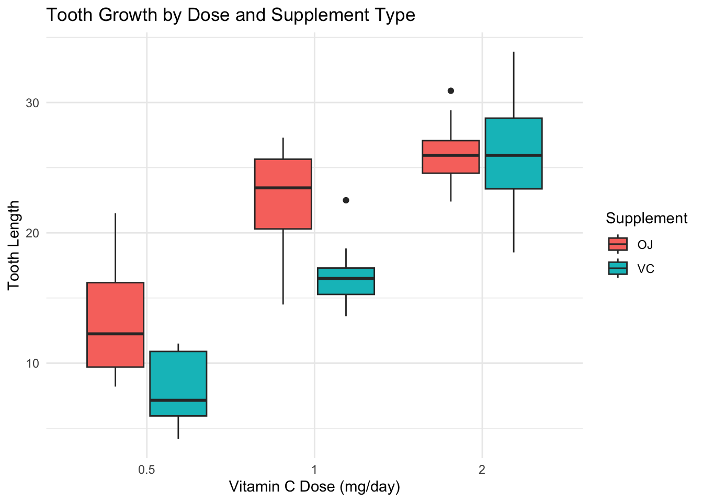

Well… I’m out of ideas, but this topic sounds interesting. How does Vitamin C affect the growth of guinea pig teeth? lol. This project explore how Vitamin C dose levels and supplement type (orange juice vs. ascorbic acid) affect tooth growth in guinea pigs. The goal is to understand whether the form of vitamin C delivery influences outcomes, and whether this effect depends on the dose administered.
library(ggplot2)
data("ToothGrowth")
head(ToothGrowth)## len supp dose
## 1 4.2 VC 0.5
## 2 11.5 VC 0.5
## 3 7.3 VC 0.5
## 4 5.8 VC 0.5
## 5 6.4 VC 0.5
## 6 10.0 VC 0.5# Convert dose to factor for ANOVA
ToothGrowth$dose <- as.factor(ToothGrowth$dose)
# Tooth length by supplement type and dose
ggplot(ToothGrowth, aes(x = dose, y = len, fill = supp)) +
geom_boxplot() +
labs(
title = "Tooth Growth by Dose and Supplement Type",
x = "Vitamin C Dose (mg/day)",
y = "Tooth Length",
fill = "Supplement"
) +
theme_minimal()
# Tooth growth increases with higher doses for both OJ and VC.
# OJ results in greater tooth growth at low and medium doses (0.5, 1.0 mg/day).
# At the highest dose (2.0 mg/day), VC catches up or slightly surpasses OJ.subset_0.5 <- subset(ToothGrowth, dose == 0.5)
subset_1 <- subset(ToothGrowth, dose == 1)
subset_2 <- subset(ToothGrowth, dose == 2)
t.test(len ~ supp, data = subset_0.5) # There is a statistically significant difference in tooth growth between OJ and VC at the 0.5 mg dose, wirh OJ leads to significantly more tooth growth than VC ##
## Welch Two Sample t-test
##
## data: len by supp
## t = 3.1697, df = 14.969, p-value = 0.006359
## alternative hypothesis: true difference in means between group OJ and group VC is not equal to 0
## 95 percent confidence interval:
## 1.719057 8.780943
## sample estimates:
## mean in group OJ mean in group VC
## 13.23 7.98t.test(len ~ supp, data = subset_1) # OJ again leads to significantly greater tooth length; ##
## Welch Two Sample t-test
##
## data: len by supp
## t = 4.0328, df = 15.358, p-value = 0.001038
## alternative hypothesis: true difference in means between group OJ and group VC is not equal to 0
## 95 percent confidence interval:
## 2.802148 9.057852
## sample estimates:
## mean in group OJ mean in group VC
## 22.70 16.77t.test(len ~ supp, data = subset_2) # no significant difference ##
## Welch Two Sample t-test
##
## data: len by supp
## t = -0.046136, df = 14.04, p-value = 0.9639
## alternative hypothesis: true difference in means between group OJ and group VC is not equal to 0
## 95 percent confidence interval:
## -3.79807 3.63807
## sample estimates:
## mean in group OJ mean in group VC
## 26.06 26.14anova_model <- aov(len ~ supp * dose, data = ToothGrowth)
summary(anova_model)## Df Sum Sq Mean Sq F value Pr(>F)
## supp 1 205.4 205.4 15.572 0.000231 ***
## dose 2 2426.4 1213.2 92.000 < 2e-16 ***
## supp:dose 2 108.3 54.2 4.107 0.021860 *
## Residuals 54 712.1 13.2
## ---
## Signif. codes: 0 '***' 0.001 '**' 0.01 '*' 0.05 '.' 0.1 ' ' 1# the type of supplement affects tooth growth.
# dose level strongly affects growth.
# supplement's effect varies by dose.
TukeyHSD(anova_model)## Tukey multiple comparisons of means
## 95% family-wise confidence level
##
## Fit: aov(formula = len ~ supp * dose, data = ToothGrowth)
##
## $supp
## diff lwr upr p adj
## VC-OJ -3.7 -5.579828 -1.820172 0.0002312
##
## $dose
## diff lwr upr p adj
## 1-0.5 9.130 6.362488 11.897512 0.0e+00
## 2-0.5 15.495 12.727488 18.262512 0.0e+00
## 2-1 6.365 3.597488 9.132512 2.7e-06
##
## $`supp:dose`
## diff lwr upr p adj
## VC:0.5-OJ:0.5 -5.25 -10.048124 -0.4518762 0.0242521
## OJ:1-OJ:0.5 9.47 4.671876 14.2681238 0.0000046
## VC:1-OJ:0.5 3.54 -1.258124 8.3381238 0.2640208
## OJ:2-OJ:0.5 12.83 8.031876 17.6281238 0.0000000
## VC:2-OJ:0.5 12.91 8.111876 17.7081238 0.0000000
## OJ:1-VC:0.5 14.72 9.921876 19.5181238 0.0000000
## VC:1-VC:0.5 8.79 3.991876 13.5881238 0.0000210
## OJ:2-VC:0.5 18.08 13.281876 22.8781238 0.0000000
## VC:2-VC:0.5 18.16 13.361876 22.9581238 0.0000000
## VC:1-OJ:1 -5.93 -10.728124 -1.1318762 0.0073930
## OJ:2-OJ:1 3.36 -1.438124 8.1581238 0.3187361
## VC:2-OJ:1 3.44 -1.358124 8.2381238 0.2936430
## OJ:2-VC:1 9.29 4.491876 14.0881238 0.0000069
## VC:2-VC:1 9.37 4.571876 14.1681238 0.0000058
## VC:2-OJ:2 0.08 -4.718124 4.8781238 1.0000000# On average, OJ leads to significantly more tooth growth than VC across all doses.
# Orange juice leads to more tooth growth than pure vitamin C at lower doses.
# At 2.0 mg/day, both delivery methods are equally effective.
# Pretty much what I expected. After all, there is vc in orange juice as well, along with other trace minerals. I wonder if they would see a difference if they isolated the vc in the orange juice. I think it would have.
# Probably should have used vc and water or other placebo.